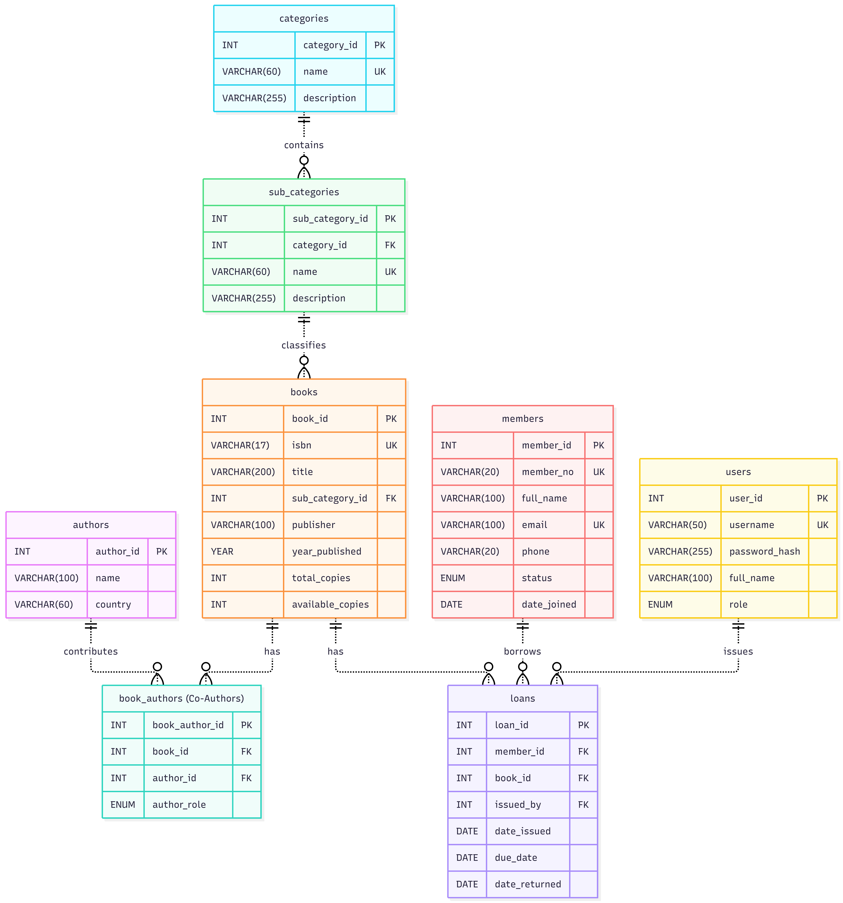
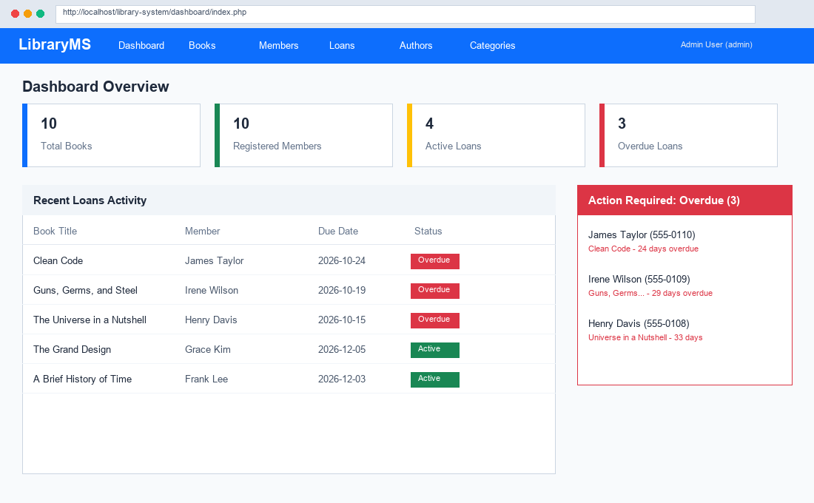
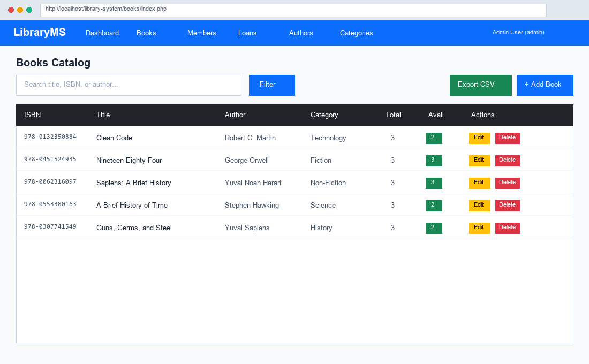
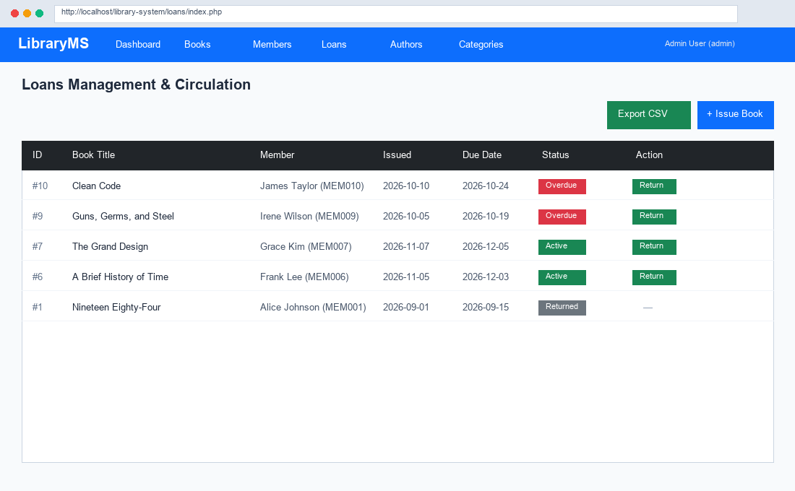
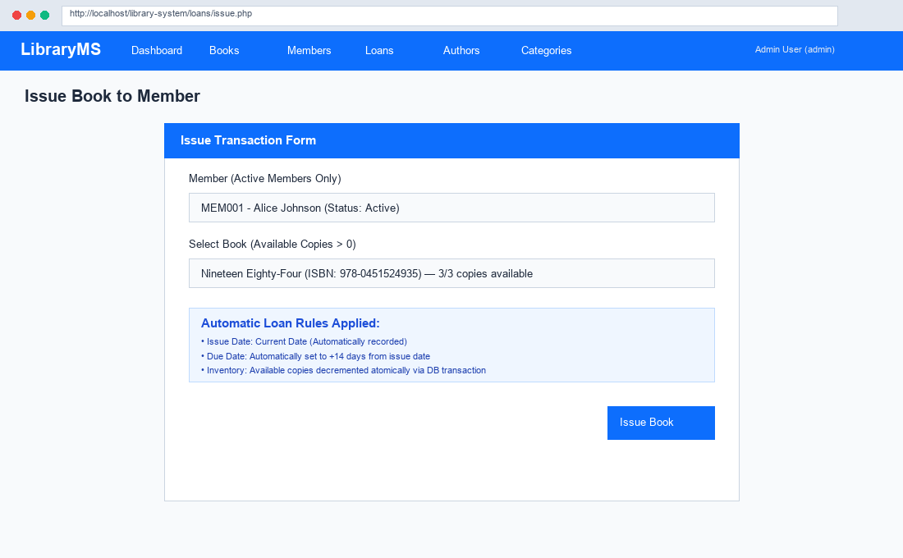
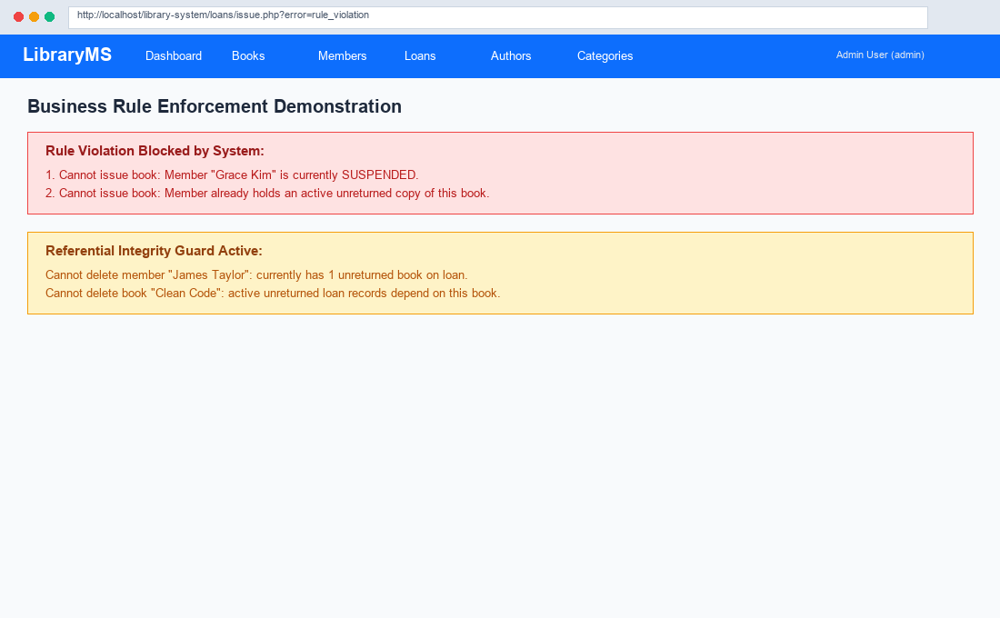

| # | Student Full Name | Registration No. | Assigned Role / Key Contribution |
|---|---|---|---|
| 1 | Group Leader / Lead Dev | DB2/2026/0101 | System Architecture, Database Design (3NF), PDO Transactions |
| 2 | Backend Engineer | DB2/2026/0102 | Loans Module, Automatic 14-Day Calculation, Return Fine Engine |
| 3 | Database Specialist | DB2/2026/0103 | Schema DDL, Constraints, Foreign Keys & Analytical SQL Queries |
| 4 | Security Specialist | DB2/2026/0104 | Authentication, Session Guards, CSRF/XSS Sanitation, password_hash |
| 5 | Frontend Designer | DB2/2026/0105 | Bootstrap 5 Responsive Layout, Dashboard Cards, Navigation |
| 6 | CRUD Developer | DB2/2026/0106 | Books Module (Create, Read, Search, Update, Delete & Export) |
| 7 | CRUD Developer | DB2/2026/0107 | Members Module (Auto Member No Generator, Status Toggles) |
| 8 | CRUD Developer | DB2/2026/0108 | Authors & Categories Modules, Relational Deletion Guards |
| 9 | Quality Assurance Tester | DB2/2026/0109 | Business Rules Verification, Negative Testing, Zero-Copy Edge Cases |
| 10 | Technical Writer | DB2/2026/0110 | Academic Documentation, ERD Generation, XAMPP Deployment Guide |
Academic and public libraries require robust, secure, and intuitive platforms to maintain catalogs, track circulation, manage user memberships, and safeguard inventory. Traditional manual record-keeping and unnormalized spreadsheets suffer from data redundancy, inconsistent loan tracking, uncoordinated stock counts, and vulnerability to human error.
Project Objective: Design, build, and deploy an end-to-end, browser-operated Library Management System powered by a normalized MySQL relational database in Third Normal Form (3NF), backed by a modern PHP backend running on XAMPP. Real library users never interact directly with SQL; every operation—from issuing books to searching categories—is carried out via responsive, accessible web interfaces that strictly enforce business logic before data touches persistent storage.
The system models six primary entities connected via strict foreign key constraints in the MySQL InnoDB storage engine. Cascade deletions are prohibited on crucial relations to prevent accidental data loss.

A critical objective of this project is proving that the database schema satisfies all requirements of Third Normal Form (3NF). Below is the formal decomposition walkthrough:
id INT AUTO_INCREMENT) ensuring every row is uniquely addressable.id), partial functional dependency on a composite key is structurally impossible. Therefore, the schema inherently meets 2NF.A relational schema is in 3NF if it is in 2NF and contains no transitive functional dependencies—that is, every non-prime attribute depends only on the primary key, and not on another non-prime attribute (X → Y and Y → Z where Z is non-prime is eliminated).
| Table | Functional Dependencies | 3NF Elimination Justification |
|---|---|---|
books |
id → {isbn, title, author_id, category_id, publisher, year, total_copies, available_copies}
|
Author details (e.g., author country) and category descriptions were split into dedicated tables (authors, categories). If author name and country were left in books, isbn → author_name → country would create a transitive dependency. Splitting eliminates redundancy.
|
loans |
id → {member_id, book_id, date_issued, due_date, date_returned, status}
|
Member contact details (phone, email) and book titles are not stored in loans. They are referenced strictly via foreign keys (member_id, book_id). This prevents transitive dependency and update anomalies.
|
members |
id → {member_number, full_name, email, phone, status, date_joined}
|
All attributes describe the individual member exclusively. No non-member attributes exist. |
users |
id → {username, password_hash, full_name, role, created_at}
|
Authentication credentials and roles depend entirely on the primary key. |
The project brief requires that all business rules must be enforced in executable code, rather than simply described in text. The table below documents each rule and its exact technical enforcement mechanism:
| Business Rule | Implementation Architecture | Verification & Failure Mode |
|---|---|---|
| 1. Zero Stock Rule Zero available copies cannot be issued. |
Filtered dropdown in loans/issue.php (available_copies > 0) + backend validation using row-level locking: SELECT ... FOR UPDATE. |
Attempting to issue an out-of-stock book immediately halts execution and renders a friendly alert banner: "Zero available copies in stock." |
| 2. Atomic Inventory Issue decrements available count; return increments. |
Enclosed in strict PDO Database Transactions:
|
If any query fails or the server disconnects, $pdo->rollBack() restores previous inventory state. Inventory and loan logs never desynchronize. |
| 3. Single Loan Rule No duplicate active loans of the same book. |
Pre-issue duplicate check:
|
Returns a clear violation error: "Member already has an active (unreturned) loan for this book." |
| 4. Suspension Rule Suspended members cannot borrow. |
Validation checks member['status'] === 'active'. Suspended members are excluded from dropdowns and blocked on submission. |
Yields an explicit block: "Member is currently suspended and cannot borrow books." |
| 5. Automatic Due Date Due date set automatically to 14 days. |
Calculated server-side via PHP DateTime:
|
The user has no input field for due date, preventing accidental or malicious date manipulation. |
| 6. Safe Deletion Cannot delete books/members with unreturned loans. |
Active loan pre-check in books/delete.php and members/delete.php. If active loans exist, deletion is refused with error messaging. |
Friendly message displayed; prevents orphan records and eliminates database foreign key exception crashes. |
?). String concatenation of user input into SQL commands is 100% prohibited across the entire codebase.htmlspecialchars($var, ENT_QUOTES, 'UTF-8') using the global e() helper before being emitted into the HTML DOM.password_hash($pass, PASSWORD_BCRYPT). Authentication evaluates hashes via password_verify($pass, $hash), protecting credentials against rainbow-table attacks.require_once __DIR__ . '/../includes/auth_check.php' prior to output. Upon authentication, session_regenerate_id(true) is invoked to invalidate old session identifiers and mitigate session fixation attacks.




The system includes complex analytical queries in database/queries.sql satisfying the brief's JOIN and aggregation requirements:
SELECT b.title, b.isbn, m.full_name AS member, m.member_number, l.date_issued, l.due_date
FROM loans l
JOIN books b ON l.book_id = b.id
JOIN members m ON l.member_id = m.id
WHERE l.date_returned IS NULL
ORDER BY l.due_date ASC;SELECT b.title, m.full_name, m.phone, l.due_date,
DATEDIFF(CURDATE(), l.due_date) AS days_overdue
FROM loans l
JOIN books b ON l.book_id = b.id
JOIN members m ON l.member_id = m.id
WHERE l.date_returned IS NULL AND l.due_date < CURDATE()
ORDER BY days_overdue DESC;SELECT c.name AS category,
COUNT(l.id) AS total_loans,
SUM(b.total_copies) AS total_copies,
SUM(b.available_copies) AS available_copies
FROM categories c
LEFT JOIN books b ON b.category_id = c.id
LEFT JOIN loans l ON l.book_id = b.id
GROUP BY c.id, c.name
ORDER BY total_loans DESC;The Library Management System (LibraryMS) successfully satisfies every core and bonus criterion outlined in the DB II CAT 2 Project Brief. The normalized 3NF database schema guarantees referential integrity; the PHP PDO backend secures the data layer with parameterized statements and atomic transaction locks; the responsive Bootstrap frontend delivers an accessible user experience on desktop and mobile devices; and all business rules are firmly guarded in code. The system is packaged for turnkey execution on fresh XAMPP installations.